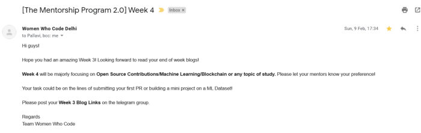
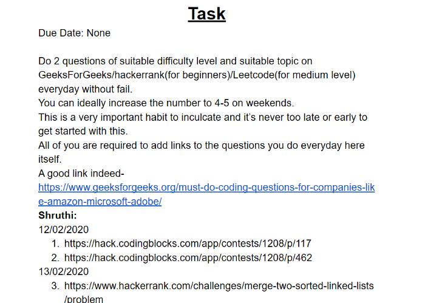

Of projects and DS Algo! - Mentorship Program 2.0 Week 4
The fourth week of the WWCD Mentorship Program was focussed on any topic of study that we wanted to pick.

This week on call with our mentor Mansi Breja, we first discussed our progress over the last four weeks. Each of us briefly shared the current status of our tasks related to the program, as well as other opportunities we were looking into. As for me, I finally submitted the GirlScript Summer of Code application, and also got through to the Analytical and Quantitative Reasoning round of the TalentSprint WE Program specifically aimed at first-year female engineering undergraduates.
Mansi di let us know that for this week’s task, we would have to solve at least two coding questions of suitable difficulty level every day, and post the links to the questions we did on the shared Google document that we’d been maintaining. She reiterated the importance of writing the questions we did somewhere, so that it motivates you to keep going. Many people lose touch when they stop coding for a while and then try and continue. This is the best way to ensure that doesn’t happen.

As for Project Jhapki, Mansi di gave me a link to a website which I’m supposed to go through before I get started with the project. She also emphasized the importance of college academics and having a high GPA, especially with me being in my first year. This is the best time to work hard and score well — your grades can only ever help you.
Owing to her rich experience, we got some really valuable advice specific to our needs this week.
Looking forward to Week-5!
Cheers!